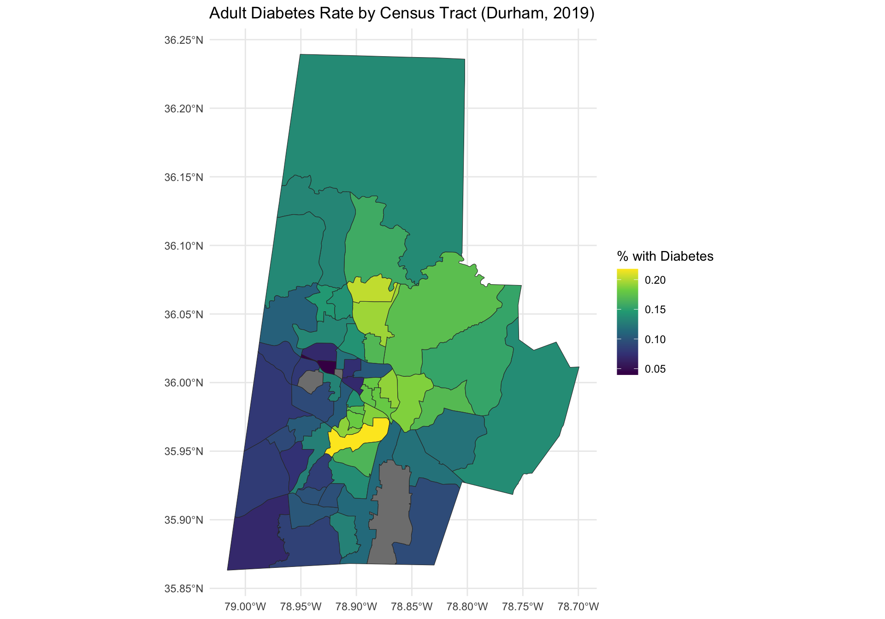
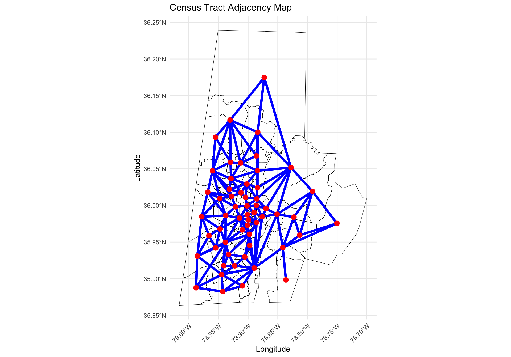

library(tidyverse) # data wrangling and visualization
library(knitr) # format output
library(rstan) # Stan
library(bayesplot) # figures for post Stan inference
library(loo) # model comparison
library(sf) # functions to work with spatial data
# new library
library(tigris) # to get boundary information for Durham tracts
library(spdep) # compute adjacency matrixAE 08: Disease Mapping
Modeling diabetes across Durham county
Due date
Application exercises (AEs) are submitted by pushing your work to the relevant GitHub repo. AEs from Tuesday lectures should be submitted by Friday by 11:59pm ET, and AEs from Thursday lectures should be submitted by Sunday at 11:59pm ET. Because AEs are intended for in-class activities, there are no extensions given on AEs.
- Final
.qmdand.pdffiles pushed to your GitHub repo - Note: For homeworks and exams, you will also be required to submit your final
.pdffile submitted on Gradescope
Getting Started
Clone the repo & start new RStudio project
- Go to the course organization at github.com/biostat725-sp25 organization on GitHub.
- Click on the repo with the prefix ae-08-. It contains the starter documents you need to complete the AE.
- Click on the green CODE button, select Use SSH (this might already be selected by default, and if it is, you’ll see the text Clone with SSH). Click on the clipboard icon to copy the repo URL.
- See the HW 00 instructions if you have not set up the SSH key or configured git.
- In RStudio, go to File \(\rightarrow\) New Project \(\rightarrow\) Version Control \(\rightarrow\) Git.
- Copy and paste the URL of your assignment repo into the dialog box Repository URL. Again, please make sure to have SSH highlighted under Clone when you copy the address.
- Click Create Project, and the files from your GitHub repo will be displayed in the Files pane in RStudio.
- Click
ae-08.qmdto open the template Quarto file. This is where you will write up your code and narrative for the AE.
R packages
We will begin by loading R packages that we will use in this AE.
Data
The Durham Neighborhood Compass
- The Durham Neighborhood Compass is a public data portal developed by the City and County of Durham, NC. It provides neighborhood-level indicators across many topics, including: health (e.g., diabetes, asthma), education, housing and development, crime and safety, and demographics and equity. Most indicators are available at the census tract level, allowing for spatial analysis of neighborhoods within Durham County. Data are updated regularly and reflect community conditions over time. Today we will focus on adult diabetes prevalence by census tract in 2019. The data is available in
dnc.csvand can be downloaded directly from the Durham Neighborhood Compass website.
The variables in the dataset are as follows and are specific to each census tract in 2019.
GEOID: location id for each census tract.diabetes: percentage of adults with diabetes.education: percentage of adults with a bachelors degree or higher.income: median household income, in $10,000.color: percentage of people of color.
The data set is available in your AE repos and is called dnc.
dnc <- read_csv("data/dnc.csv")Creating an analysis dataset
We will begin by extracting the spatial information for Durham County, NC using the tigris R package.
durham_tracts <- tracts(
state = "NC",
county = "Durham",
year = 2019,
class = "sf",
progress_bar = FALSE
)This object is an sf data object. The relevant variables are GEOID, which contains a unique identifier of each county and geometry, which contains the boundary information. For analyzing our data, we will first merge dnc with the sf data object. We begin by preparing the data for merging.
durham_merged <- durham_tracts %>%
mutate(GEOID = as.numeric(GEOID)) %>%
left_join(dnc , by = "GEOID")We can now visualize the adult diabetes proportion across the Durham county census tracts.
ggplot(durham_merged) +
geom_sf(aes(fill = diabetes), color = "gray20") +
scale_fill_viridis_c(option = "plasma", na.value = "lightgray") +
labs(title = "Adult Diabetes Rate by Census Tract (Durham, 2019)",
fill = "% with Diabetes") +
scale_fill_viridis_c() +
theme_minimal()
Note that there are three locations that do not have any data, represented in gray. These locations correspond to census tracts with a zero residents. For the analysis we will remove them.
Model Goals
Define \(Y_i\) as the percentage of adults with diabetes in census tract \(i\), for \(i = 1,\ldots,n\). There are \(n = 57\) census tract in Durham county with a non-zero number of residents. We are interested in producing a map of adult diabetes that has been smoothed using an ICAR process. We want to fit the following model:
\[\begin{align*} Y_i &= \alpha + \mathbf{x}_i\boldsymbol{\beta} + \theta_i + \epsilon_i, \quad \epsilon_i \stackrel{iid}{\sim} N(0,\sigma^2)\\ \boldsymbol{\theta} &\sim \text{ICAR}(\tau^2)\\ \alpha^* &\sim N(0, 3^2)\\ \beta_j &\sim N(0,3^2)\quad j = 1,\ldots,p\\ \sigma &\sim \text{Half-Normal}(0, 3^2)\\ \tau &\sim \text{Half-Normal}(0, 3^2), \end{align*}\] where \(\mathbf{x}_i = (\text{education}_i,\text{income}_i,\text{color}_i)\) and \(\alpha^*\) is the centered intercept.
Computing the adjacency matrix
To fit the model, we required an adjacency matrix, \(\mathbf{W}\). We only want to compute our adjacency matrix for the locations with non-zero residents. Thus, we create a dataset that removes census tracts with NA for diabetes.
durham_model_data <- durham_merged %>%
filter(!is.na(diabetes))We then use functions for the R package spdep to create a neighbor list and adjacency matrix.
nb <- poly2nb(durham_model_data)
W <- nb2mat(nb, style = "B", zero.policy = TRUE)We can visualize the adjacency matrix. To do this we first get the centroids of each census tract.
centroids <- st_centroid(durham_model_data)
centroids <- centroids %>% mutate(id = 1:nrow(centroids))We then compute the edges and create a data frame with the indices of the neighboring census tracts.
neighbor_pairs <- which(W == 1, arr.ind = TRUE)
edges <- data.frame(
from = neighbor_pairs[, 1],
to = neighbor_pairs[, 2]
)This plot shows the adjacency structure among Durham County census tracts used in the spatial model. The function geom_sf() draws the outlines of the tracts and also plots red dots at each tract centroid to show where the adjacency links originate. The function geom_segment() draws blue lines between neighboring tracts, based on their centroids.
ggplot(data = durham_model_data) +
geom_sf(fill = NA, color = "black") +
geom_segment(data = edges,
aes(x = st_coordinates(centroids)[from, 1], y = st_coordinates(centroids)[from, 2],
xend = st_coordinates(centroids)[to, 1], yend = st_coordinates(centroids)[to, 2]),
color = "blue", size = 1.5) +
geom_sf(data = centroids, aes(geometry = geometry), color = "red", size = 3) +
theme_minimal() +
coord_sf() +
labs(x = "Longitude", y = "Latitude") +
ggtitle("Census Tract Adjacency Map") +
theme(axis.text.x = element_text(angle = 45, hjust = 1))
Finally, we can compute the needed objects for the ICAR prior.
neighbor_pairs_lower <- neighbor_pairs[neighbor_pairs[, 1] < neighbor_pairs[, 2], ]
n_edges <- nrow(neighbor_pairs_lower)
node1 <- neighbor_pairs_lower[, 1]
node2 <- neighbor_pairs_lower[, 2]Fitting the Model
We can then compute the design matrix, making sure to remove the intercept.
X <- model.matrix(~ education + income + color, data = durham_model_data)[, -1]And then we can create the Stan data object.
stan_data <- list(
n = nrow(durham_model_data),
p = ncol(X),
n_edges = n_edges,
node1 = node1,
node2 = node2,
Y = durham_model_data$diabetes,
X = X
)We will now fit the model and print the posterior summaries and MCMC convergence diagnostics.
icar <- stan_model(file = "icar.stan")
fit_icar <- sampling(icar, stan_data,
iter = 5000, control = list(adapt_delta = 0.99))
print(fit_icar, pars = c("alpha_star", "alpha", "beta", "sigma", "tau"))Inference for Stan model: anon_model.
4 chains, each with iter=5000; warmup=2500; thin=1;
post-warmup draws per chain=2500, total post-warmup draws=10000.
mean se_mean sd 2.5% 25% 50% 75% 97.5% n_eff Rhat
alpha_star 0.13 0 0.00 0.13 0.13 0.13 0.13 0.13 20490 1.00
alpha 0.20 0 0.03 0.14 0.18 0.20 0.22 0.25 2169 1.00
beta[1] -0.09 0 0.03 -0.14 -0.11 -0.09 -0.07 -0.03 1931 1.00
beta[2] 0.00 0 0.00 -0.01 -0.01 0.00 0.00 0.00 5675 1.00
beta[3] 0.02 0 0.02 -0.02 0.01 0.02 0.04 0.07 2660 1.00
sigma 0.02 0 0.00 0.01 0.01 0.02 0.02 0.02 541 1.01
tau 0.02 0 0.01 0.00 0.01 0.02 0.03 0.04 591 1.01
Samples were drawn using NUTS(diag_e) at Tue Mar 25 10:52:25 2025.
For each parameter, n_eff is a crude measure of effective sample size,
and Rhat is the potential scale reduction factor on split chains (at
convergence, Rhat=1).Note that I increased adapt_delta from its default of 0.8 to help with the convergence. We will can also look at traceplots, which look good. The number of effective samples is quite small for the variance parameters, which is a bit concerning, however since the \(\hat{R}\) and traceplots look good, we can proceed with inference.
rstan::traceplot(fit_icar, pars = c("alpha_star", "alpha", "beta", "sigma", "tau"))
Posterior Predictive Distribution
We will now look at the posterior predictive distributions, which we can use to map the diabetes proportion across Durham census tracts. We begin by extracting the posterior predictive distribution and then compute summaries.
Y_pred <- rstan::extract(fit_icar, pars = "Y_pred")$Y_pred
ppd_mean <- apply(Y_pred, 2, mean)
ppd_sd <- apply(Y_pred, 2, sd)We then merge the predictions back to the original dataset, with all census tracts, including those with the NA for diabetes, so that our maps are across all census tracts. We begin by creating a data object that contains our predictions that can then be merged into the full data.
model_geoids <- durham_merged %>%
filter(!is.na(diabetes)) %>%
pull(GEOID)
predictions <- tibble(GEOID = model_geoids,
ppd_mean = ppd_mean,
ppd_sd = ppd_sd)We now merge predictions back into the full spatial object for plotting.
durham_plot_data <- durham_merged %>%
left_join(predictions, by = "GEOID")The code to create a map of the observed diabetes proportion and the posterior mean is below. Note that I make sure to have each plot be on the same color scale, so they are comparable. I first compute the maximum value needed for the upper bound and then use the limits functions.
max_limit <- max(c(durham_merged$diabetes,
durham_plot_data$ppd_mean), na.rm = TRUE)The maps can be created as follows.
ggplot(durham_plot_data) +
geom_sf(aes(fill = diabetes), color = "gray20") +
scale_fill_viridis_c(option = "plasma", na.value = "lightgray") +
labs(title = "Adult Diabetes Rate by Census Tract (Durham, 2019)",
fill = "% with Diabetes") +
scale_fill_viridis_c(
limits = c(0, max_limit),
na.value = "lightgray" # Gray out missing tracts
) +
theme_minimal()
ggplot(durham_plot_data) +
geom_sf(aes(fill = ppd_mean), color = "black") +
scale_fill_viridis_c(
limits = c(0, max_limit),
na.value = "lightgray" # Gray out missing tracts
) +
labs(
title = "Predicted Diabetes Rate by Census Tract (ICAR Model)",
fill = "Predicted %"
) +
theme_minimal()

Exercises
Exercise 1
Examine the two side-by-side plots above and compare and contrast them. What changes to do you observe?
Answer:
# add code hereExercise 2
Create a map of the posterior predictive standard deviation across the Durham census tracts. What patterns do you observe?
Answer:
# add code hereExercise 3
Present posterior summaries of \(\boldsymbol{\beta}\). Which predictors are associated with adult diabetes?
Answer:
# add code here
Important
To submit the AE:
- Render the document to produce the PDF with all of your work from today’s class.
- Push all your work to your AE repo on GitHub. You’re done! 🎉